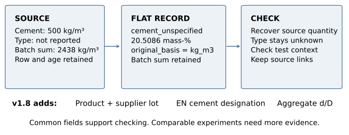
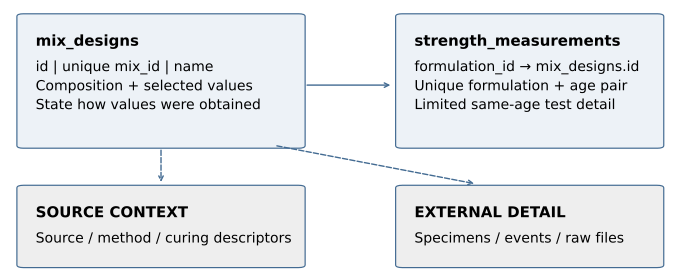
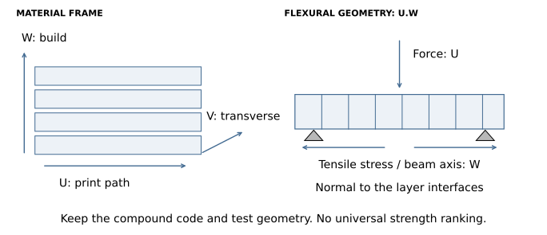

Open3DCP: A Public Data Schema for 3D Concrete Printing
Recording composition, process, test context and provenance
Sunnyday Technologies, Wisconsin, USA
ORCID: 0009-0002-1897-384X
Manuscript v1.2: preprint. Not peer reviewed.
Technical target: Open3DCP schema v1.8 draft, commit
fa5fdd5 (15 September 2026 snapshot).
Original publication: 14 May 2026. Retained v1.0: 10 June 2026; v1.1: 30
July 2026. Revision: 15 September 2026.
Abstract
Concrete test data need more than a strength value and a mix name. A useful record also identifies the material, reporting basis, production conditions, specimen and test. Open3DCP provides a public, flat column vocabulary with companion tables for extrusion-based 3D concrete printing. The v1.8 draft contains 279 data columns in its main table, excluding the primary key. This revision explains the additions for commercial premix identity, EN cement designations and aggregate size fractions. It shows how to retain source quantities in kg/m³ while deriving mass-percent values under stated accounting conditions. A read-only audit examines 71 retained example rows from five heterogeneous sources. These are conversion examples and aggregates, not 71 independent experiments or a validated training corpus. The audit reproduces a mass-basis round trip and identifies incompatible grouping in the earlier RILEM extraction; the previous quantitative anisotropy conclusion is withdrawn. Common fields can make reporting and checking easier, but do not establish experimental comparability, physical performance or code compliance. The contribution is a documented reporting method and an inspectable account of what conversion preserves, changes and leaves unresolved.

1. What must survive when a result becomes a row?
The first row in the retained UCI example contains 500 kg/m³ of
cement and a compressive strength of 12.64 MPa at one day. It does not
identify the cement as ASTM C150 Type I. A conversion that places this
quantity in cement_type_1 adds a classification the source
did not give. The corrected representation uses
cement_unspecified, keeps the mass basis, and leaves the
cement classification unresolved [1, 2].
This small example captures the paper’s central question: what must a reporting format keep so that the next reader can understand and check a result? A number may survive copying while its meaning changes. Kilograms per cubic metre can become percent of binder; a supplier strength class can become a measured concrete strength; a group mean can become an apparent specimen result. Each error can produce a plausible-looking table.
Extrusion printing adds further context. Pumping, deposition, layer timing and curing affect the state of the material being tested. Rheological requirements and interlayer behaviour have established research literatures [3–5]. Recording these conditions is useful even when the intended analysis uses only a few of them. Their presence does not make unlike tests comparable; it helps a reader identify the differences before combining results.
Open3DCP is a schema specification, maintained as a column reference, SQL definition and supporting mappings [1]. It is not a specimen database service. The repository includes small licensed conversion examples, but those examples do not make the specification a research dataset. The format requires no particular printer, supplier, formulation engine or commercial software. Researchers can use the relevant columns in ordinary tabular tools and retain detailed source records alongside them.
This paper makes three contributions: it explains the consequential recording choices; documents the maintained v1.8 changes against the v1.7.5 snapshot described in manuscript v1.1; and checks the retained examples closely enough to distinguish successful arithmetic from unsupported interpretation. No new mix was produced, no model was trained, and no construction performance was qualified for this revision.
1.1 Scope and version boundary
The maintained project scope is extrusion-based 3D concrete printing and hydraulic cementitious systems, including Portland and blended cements, calcium-aluminate and calcium-sulfoaluminate cements, and high-calcium alkali-activated slag. Low-calcium fly-ash geopolymer systems and particle-bed, binder-jetting, spray and slip-form processes remain outside the project’s stated scope [1]. This is a scope decision, not a claim that those materials or processes cannot be represented digitally. The existing activator fields do not establish complete coverage of every alkali-activated chemistry.
The word standard in the project name identifies an open reporting proposal. Open3DCP is not endorsed or certified by ASTM, CEN, ACI, ICC, ISO or RILEM. Referenced standards govern their own material definitions and test procedures. The schema stores descriptions and results; it does not replace the underlying procedures or professional decisions.
Schema and manuscript versions are separate. This manuscript is a v1.2 preprint revision. Its technical target is the maintained v1.8 draft at the full commit identified in Appendix A. The changelog labels that schema increment 1.8.0. Public availability of the draft does not imply formal ratification or a matching Zenodo deposit. The concept DOI identifies the schema series, not this manuscript.
2. A source record before and after conversion
Table 1 uses the first data row in the frozen UCI excerpt. Row numbers here exclude the CSV header and identify this excerpt, not a claimed original UCI specimen identifier. The source supplies seven constituent masses, age and strength. It supplies neither a cement standard designation nor aggregate grading. The conversion should not infer these properties from what is common in concrete practice.
| Source statement | Recorded representation | Information still missing |
|---|---|---|
| Cement: 500 kg/m³ | cement_unspecified; preserve
source mass and basis |
ASTM/EN type and supplier designation |
| Fine aggregate: 613 kg/m³ | fine_agg_unspecified |
Fineness modulus and grading |
| Coarse aggregate: 1125 kg/m³ | coarse_agg_unspecified |
Size designation and grading |
| Water: 200 kg/m³ | water, projected on the
declared wet-mass basis |
Aggregate moisture correction, if any |
| Slag, fly ash and superplasticizer: zero | Explicit zeros in those fields | No positive dosage inferred |
| Strength: 12.64 MPa at one day | Strength and age retained separately | Specimen geometry and detailed test procedure |
The generic constituent fields were already implemented in v1.7.5.
They are not new v1.8 additions. Their purpose is to keep a stated
quantity without inventing a more specific class. Similarly,
admixture_basis=as_delivered records the basis of a
delivered product when its solids fraction is unknown. A missing solids
fraction must not be silently replaced by an assumed percentage.
NULL means the value is unavailable for the record. It
can mean unreported, unknown, unmeasured or inapplicable. These reasons
are not identical, and the single null value does not encode their
distinction. When the reason matters, record it in the provenance notes
or a linked curation record. Zero is appropriate only when the source
reports zero or absence. Blank constituent cells in a proprietary premix
do not mean the product contains none of those constituents.
The distinction between unspecified and other is also deliberate.
cement_unspecified is for an unknown type. In v1.8,
cement_other is for a stated type that has no dedicated
quantity column; its exact designation belongs in
cement_designation. A curator should not turn a known but
unsupported designation into an unknown one merely to fit the
vocabulary.
3. What one Open3DCP record represents
3.1 A flat core with linked detail
The SQL implementation calls its main table mix_designs.
It has an internal id, a unique required
mix_id, a required name, optional parent and
batch labels, and fields for composition, process, tests, properties and
provenance. Its practical core is a formulation-centred record with
selected context and scalar results. It is not a fully normalized
specimen, event and test database [1].
This matters because the examples have different row meanings. UCI rows describe mix-and-age observations. Meta rows describe reported mix-and-age summaries. RILEM rows are aggregates assembled by an extraction script. The UF excerpt carries selected age-specific results from literature records. The buildings example describes projects. They must not all be described as one specimen per row.
For an analytical export, the curator needs to state what each row
represents and preserve a source key. If several tests or batches share
a formulation, their relationship must remain available in the source
tables or an explicit sidecar. A parent_mix_id can document
a variant relationship, but in the frozen DDL it is text, not an
enforced foreign key. Likewise, batch_label identifies a
local batch context; it is not a normalized batch table.

3.2 Companion-table limits
The maintained DDL creates strength_measurements,
sources, test_methods,
curing_regimes and standard_test_ages in
addition to mix_designs. The first of these references
mix_designs(id) through formulation_id. It
also imposes UNIQUE(formulation_id, test_age_days). This is
useful for one age-series record per formulation and age, but cannot
separately hold every replicate, orientation and test method at the same
age under that same key.
Consequently, the companion table does not solve all specimen-level relationships. A claim that the format preserves the full experimental chain without joins is too strong. The schema can hold selected values and references; detailed geometry, print events, replicate identities, test histories and files may still need their original relational representation. This paper documents that boundary rather than changing the schema to resolve it.
The example CSVs also lack the required SQL identity columns. They
are partial tabular excerpts, not ready-to-insert database instances.
The buildings file includes ten project columns outside the main
vocabulary; UF adds source_dataset. Their descriptive value
remains, but their filenames do not establish strict conformance to the
canonical main table. The companion audit lists these fields
explicitly.
3.3 Measured, derived and aggregated values
A source measurement, a unit conversion, a calculated ratio and a
group mean are different operations. A row-level
measurement_confidence flag is too coarse to explain all of
them in a mixed record. Use the source reference and curation ledger to
identify which values were reported, converted or aggregated, and retain
the input values for derived quantities.
A standard deviation needs its definition, sample count and grouping rule. Population standard deviation uses a divisor of ; sample standard deviation uses . Neither is automatically a standard error, and neither resolves dependence among specimens from one print or batch. The old RILEM excerpt stored calculated group summaries while labelling the record measured. That label did not describe the extraction sufficiently.
4. Recording quantities without changing their meaning
4.1 The mass-basis bridge
The maintained contract treats source kg/m³ as the primary practical
reporting basis and stores constituent columns as mass-percent of total
wet mix. original_basis identifies the incoming basis.
total_batched_mass_kg_m3 is the sum used in the projection,
while total_binder_kg_m3 retains the cementitious total for
binder-relative calculations. The batched-mass total is not a measured
fresh density.
Let be the reported mass of constituent on the common kg/m³ basis, and let . For a complete, consistently accounted inventory with ,
No measured density enters these equations. They preserve the reported proportional basis even if the source’s design quantities do not demonstrably yield exactly one physical cubic metre. A yield discrepancy is still a discrepancy and must travel with any per-volume interpretation.
For the UCI row in Section 2, kg/m³ and the reported binder total is 500 kg/m³. Table 2 shows the calculation. The display rounds percentages to four decimal places; the evidence file retains the full stored values.
| Constituent | Source kg/m³ | Mass-percent | Recovered kg/m³ from displayed percent |
|---|---|---|---|
| Unspecified cement | 500.0 | 20.5086 | 499.999668 |
| Water | 200.0 | 8.2034 | 199.998892 |
| Unspecified coarse aggregate | 1125.0 | 46.1444 | 1125.000472 |
| Unspecified fine aggregate | 613.0 | 25.1436 | 613.000968 |
| Slag, fly ash, superplasticizer | 0.0 each | 0.0000 each | 0.000000 each |
The read-only check reconstructs all 98 constituent cells in the 14-row UCI excerpt from the stored percentages and batch totals. The largest floating-point difference is kg/m³, rounded upward. Rounding all percentages to four decimal places increases the largest error across that excerpt to about 0.00123 kg/m³. These are arithmetic checks on the stated inventory, not uncertainty estimates for the underlying measurements.
The conditions are essential. Include each constituent once, on a consistent wet/as-delivered or solids-plus-carrier basis. Do not count a solution both as a whole and as its separated components. Do not normalize a partially reported inventory and call it total-mix composition. Preserve the source precision and document any conversion input. A volume dosage needs the appropriate density to become mass; a mass inventory already reported on a common basis does not.
4.2 Ratios, water and admixtures
Absolute binder dosage is necessary to recover kg/m³ from binder-relative ratios, but is not necessary to recover mass fractions from a complete set of mass ratios. If for a common binder reference , then
The scale cancels. Ratios expressed as percent of binder first require division by 100. A binder total must not be counted again alongside all of its component ratios. This corrects the earlier paper’s explanation of the UF example. Section 6 describes the remaining source-specific ambiguities; the revision does not fabricate missing quantities to complete that inventory.
The water-to-binder ratio also needs an accounting definition. The
maintained convention uses the recorded water column relative to
cementitious material. Carrier water inside an as-delivered admixture is
not automatically added. Thus a computed w_b_ratio may
differ from an effective-water ratio that includes aggregate moisture,
absorption or admixture carrier water. Keep the stated ratio and its
definition visible when those inputs are unavailable. Do not use a
dry-product bulk density as a substitute for wet-mix density or batch
yield.
4.3 Units and conversion checks
Strength columns use MPa, elastic modulus uses GPa, and rheological
stresses use Pa. A column name helps the reader, but does not prevent
incorrect input. The v1.8 crosswalk/units.csv records
units, quantity kinds and conversion factors for a consistent
mm–N–tonne–second finite-element unit system. For example, MPa equals
N/mm², while kg/m³ converts to tonne/mm³ by multiplying by
[1].
This file is a unit mapping, not a finite-element material model. A
blank factor must not be treated as one. In particular,
cement_strength_class_mpa is a classification and
deliberately has no physical stress conversion. Export still needs a
choice of constitutive model, applicable test data and engineering
interpretation. The existence of a unit manifest does not establish a
validated solver integration.
5. What changed in the maintained v1.8 draft?
The frozen SQL comparison finds 31 added main-table fields and no
removed fields. Excluding id, the count rises from 248 to
279. Including it, the counts are 249 and 280. The previous categorical
growth figures are replaced by this direct comparison; no claim that
schema growth has stabilized is retained. Appendix A groups the
additions, and the evidence package lists every column and SQL
definition.
5.1 Commercial premix identity
Six fields record is_premixed, supplier,
product_name, supplier_batch_number,
production_date and bulk_density_kg_m3. They
allow a record to identify a purchased material even when its
constituent recipe is proprietary. supplier_batch_number is
the supplier’s lot; batch_label remains the user’s local
repeat-batch identifier. production_date concerns
manufacture of the supplied material, while date_of_casting
concerns the concrete batch and curing clock.
Product and lot identity improve traceability. They do not, by themselves, make a print reproducible. Water addition, storage condition, mixing, process settings, curing and test context still matter. An undisclosed recipe can remain unknown while the available product evidence is recorded accurately. The revised paper therefore does not repeat the changelog’s stronger suggestion that these fields fully determine reproducibility.
5.2 Cement designations must remain distinct
The v1.8 draft introduces 18 EN cement quantity columns. Four keep
the limestone distinctions explicit: cem_ii_a_l,
cem_ii_a_ll, cem_ii_b_l and
cem_ii_b_ll. They must not collapse into
cement_type_1l. In v1.8,
cement_type_1l means ASTM C595 Type IL
only. Type IL is written with a capital I and L in the standard
designation; the existing schema identifier uses the digit 1 [1, 6].
Preserve the exact source designation in
cement_designation. cement_standard identifies
its designation system. The numeric supplier class belongs in
cement_strength_class_mpa. The L, N or R designation
belongs in cement_early_strength_class. A designation such
as CEM I 42.5 R is a cement classification, not a measured 42.5 MPa
result for the printed mix. Nor does R alone quantify the open time or
buildability of a formulation. These fields should not be derived from
concrete strength tests.
The new cement_other field retains a stated
hydraulic-cement type outside the dedicated columns. Together, a
quantity field, verbatim designation and designation system are more
informative than either a forced ASTM approximation or an isolated
free-text note. They remain a record of the source claim: entering a
standard designation does not prove that a material satisfies that
standard.
5.3 Aggregate size fractions
agg_fraction_d_lower_mm and
agg_fraction_d_upper_mm retain the lower and upper sizes of
a stated aggregate fraction when that is the information available.
These fields complement the existing fineness-modulus approach. A size
interval alone does not determine the sieve distribution and cannot
yield a fineness modulus. Neither a size interval nor fineness modulus
alone certifies aggregate grading compliance.
The paper’s former statement that 3DCP uses only fine aggregate is withdrawn. Equipment and application constrain aggregate selection; the schema already includes coarse-aggregate fields. The useful reporting principle is to preserve the grading evidence actually supplied, without inventing a distribution to populate a preferred field.
5.4 Compatibility and extensions
The DDL additions are structurally additive, but the cement mapping
requires semantic care. Pre-v1.8 cement_type_1l rows may
mean ASTM Type IL or EN CEM II/A-L under the former dual mapping. An old
header alone cannot distinguish them. Retain the old schema version and
inspect the source designation before reclassification. This manuscript
does not migrate any records.
The maintained draft reserves x_ for documented
site-specific extension columns. That reservation does not turn such
fields into canonical Open3DCP columns. Gaps should be proposed upstream
with their type, unit, reporting basis, range and primary technical
reference. A local export or a paper revision must not silently redesign
the shared schema.
5.5 The existing material and test vocabulary
The additions sit within a broader reporting vocabulary. The binder and supplementary-material fields distinguish stated material families; aggregate, fiber, admixture, pigment and activator fields retain quantities alongside descriptors. These are separate ingredients and attributes, not a claim that all fields should be used together. A purchased blended cement should not be counted once as a cement and again as inferred clinker and additions unless a clearly documented decomposition replaces the original quantity.
Fiber dosage and geometry are recorded separately.
fiber_length_mm, fiber_diameter_mm and
fiber_aspect_ratio describe different attributes;
calculating their ratio requires compatible units and a meaningful
common fiber population. A single length or diameter cannot describe a
multimodal fiber mixture. The scalar summary should therefore retain its
population definition in the source context, with distributions kept
externally where available.
Fresh-state fields include static and dynamic yield stress, plastic
viscosity, structuration rate, spread, setting times and other
workability measurements. These quantities are not interchangeable tests
of printability. A recorded static_yield_stress_pa requires
the measurement time, apparatus and loading history to be interpretable.
structuration_rate_pa_per_s records a rate, not a yield
stress. rheology_curve_file can point to the underlying
curve, while a scalar field carries the reported summary [1, 3].
Process fields cover print speed, nozzle geometry, layer dimensions,
extrusion rate, mixing and pumping. In particular,
layer_time_gap_s denotes a local interval between layers at
a point. A total job duration or travel time for a whole object is not
automatically that interval. A single nominal value is useful only with
a statement of the print schedule it summarizes. The original machine
log can retain variation that the scalar field omits.
Mechanical fields include compressive, tensile, flexural and bond
strengths, modulus, toughness and related quantities.
interlayer_bond_mpa and interlayer_shear_mpa
are dedicated interface fields; a general bond result must not be
relabelled interlayer merely because the specimen was printed. Test
method, specimen preparation, orientation and failure location still
determine the meaning of the result. The available uncertainty fields
support selected summaries, not a complete uncertainty budget for every
column.
The durability and thermal vocabulary goes beyond strength. The
charge result is recorded in chloride_rcpt_coulombs. The
chloride migration and diffusion fields represent coefficients. Their
numerical values must not be interchanged or combined under a generic
chloride-resistance label. Exposure descriptions and test-method
references help identify the intended interpretation; they do not
convert an accelerated test into an established service-life prediction
[1].
Finally, raw_data_doi, stress_strain_file,
microstructure_image and raw_data_file
preserve references to larger evidence. A resolvable file, its units,
license and sample linkage remain the depositor’s responsibility. A
filename alone cannot reconstruct the acquisition method. These existing
fields support the composition-process-condition-property-provenance
chain while keeping its incomplete parts visible.
6. What the five retained examples demonstrate
6.1 Scope of the evidence
The frozen examples contain 71 rows: 14 UCI, 28 Meta, 9 RILEM, 10 UF and 10 buildings. Selection was purposive, not random. The sources exercise different reporting situations and have different observational units. A row count is therefore a description of the artifacts, not a sample size for a pooled scientific conclusion.
| Source | Retained rows | Selection and row meaning | Demonstrated use and limit |
|---|---|---|---|
| UCI/Yeh [2] | 14 | Curated mix-and-age rows spanning composition and age | Mass projection; cement and grading remain unspecified |
| Meta SustainableConcrete [7] | 28 | Six selected mixes across reported ages | Quantity, strength-summary and GWP fields; no printing evidence |
| RILEM ILS-mech [8] | 9 | Selected aggregates for mixes 01_a, 13_a, 19_a | Source linkage and grouping audit; earlier effect claim withdrawn |
| UF mix-design compilation [9] | 10 | Selected literature rows with rheology, w/b and strength | Unit conversion and source context; ratio accounting unresolved |
| Buildings catalogue [10] | 10 | Fixed project IDs across selected buildings | Project metadata; ten project columns are outside the main schema |
The UCI source has nine numeric columns. The retained Meta input adds uncertainty summaries and GWP values. Those are distinct data attributes, not evidence that the two sources use interchangeable tests. The buildings script selects source IDs 12, 18, 20, 45, 47, 50, 63, 64, 67 and 58; it does not extract material performance. The earlier surveyed UHPC coded matrix remains excluded from the demonstration because its usable mapping was not established. No new assessment of that source’s access conditions is claimed here.
6.2 RILEM: the earlier grouping does mix incompatible contexts
The previous paper reported flexural reductions of 32–55% relative to cast reference groups. The review initially established missing safeguards in the extraction code, not actual contamination. The present read-only audit goes further: it inspects the original SQLite export and matches the nine retained rows to their raw aggregate means and counts.
The legacy query selects three mix-name prefixes, accepts numeric strengths at ages 20–40 days, and groups by compound orientation. It does not separate test method, scale or default/deviating conditions. The raw data confirm these distinctions are present inside the selected groups. For example, the 01_a cast group includes both three- and four-point bending and both mortar- and concrete-scale specimens. The 01_a U.W group includes both bending methods, ages 28 and 29 days, and DEFAULT plus DEV1 conditions. The corresponding 13_a U.W group includes DEFAULT, DEV1 and DEV2. The 19_a cast and U.W groups also combine bending methods.
These are observations about the audited extraction, not a criticism of the RILEM experiment. Its study plan explicitly distinguishes these cases. The primary analysis separates test type, scale and process condition, and applies its own age and outlier criteria [11, 12]. The old excerpt did not reproduce that analysis.
All nine retained means and counts match raw legacy aggregates to their published precision. That confirms where the numbers came from; it does not validate the comparisons. Moreover, the current legacy script would enumerate 12 orientation groups from this database, while only nine are retained. The omitted groups are 01_a V.U, 13_a W.U and 19_a W.U. No documented selection rationale for those omissions was found in the inspected script and source note.
The 32–55% conclusion and its error interpretation are withdrawn from the abstract, results and figure. This revision does not substitute a new effect estimate. A defensible reanalysis would need source-linked print and batch identities, matched methods and scales, explicit age and condition rules, and an uncertainty treatment that respects clustering. The accompanying inclusion ledger preserves the individual source codes and context so that this work can be reviewed independently.
6.3 Orientation needs the full test geometry
The old mapping used the first part of compound RILEM codes to create X/Y/Z labels. That projection is insufficient for flexure. Force direction, beam axis and tensile-stress direction are different geometric quantities. The original compound code must remain available in source-linked notes or a sidecar even when a simpler analytical field is also used.

The revised paper removes the earlier highest/moderate/lowest strength table. A source-defined coordinate system and test diagram are more useful than a universal ranking. Keep CAST as the recorded reference preparation; do not treat it as proof that all cast specimens are isotropic or that every cast and printed pair is otherwise matched.
6.4 UF: correct the reason for leaving composition unresolved
The original workbook was inspected read-only. Applying the script’s selection order finds ten source rows and ten age-specific outputs. It selects rows with numeric static yield stress, water/binder ratio and at least one strength value, with at most two rows per reference. The code does not actually apply the explicit printable-Portland filter described in its introductory comment.
The workbook contains useful binder-relative quantities. For example, source spreadsheet row 46 states cement, fly ash and silica-fume ratios of 0.47, 0.47 and 0.06, with water/binder 0.30 and sand/binder 0.50. If these were the complete constituent inventory, Equation 2 would normalize them without an absolute binder dosage. Blank admixture entries, however, are not explicit zero evidence.
Other selected rows contain admixture or activator descriptors beneath mixed percent-of-binder and ratio headers. The extractor also probes some constituent-name cells as numbers when identifying supplementary materials. The current excerpt’s chemistry labels therefore require further curation. This revision retains the example as a reporting audit, corrects the false mathematical explanation, and leaves composition unconverted pending complete source accounting. No unknown density or binder dosage is invented.
6.5 Carbon records are not a strength–carbon result
The Meta excerpt records reported GWP and strength summaries at stated ages. The source repository separates measured data from model proposals [7]. This is useful provenance, but does not establish a general relationship between binder carbon and concrete strength. The earlier highlighted pair mixed composition and water/binder effects and carried a yield caveat.
This revision removes the pairwise carbon-reduction headline. Retaining it as a result would require a matched account of source row IDs, measured versus generated status, test age and method, GWP boundary and factors, and the per-volume yield basis. The retained example continues to demonstrate fields for those reported quantities. It does not demonstrate that Open3DCP reduces carbon or that a low-clinker formulation meets a structural requirement.
7. What the conversion checks establish
7.1 Counts before scores
The retained UCI fidelity report counts 126 routed cells, corresponding to 14 rows and nine source fields. It separately scores 117 substantive value cells and marks 47 as generically recorded. Its 100/A grade reflects the applicable dimensions under the maintainer’s scoring rules. These denominators are not all counts of independent measurements.
The retained Meta report counts 516 populated source fields, of which 48 selector/metadata fields are excluded from the field-coverage denominator. It reports 468 mapped fields, 459 substantive value cells and 103 generic cells. Coverage is 100% on its chosen denominator and about 91% across all 516 populated fields. These figures describe the retained tool report, not an independently calibrated quality scale.
A score cannot detect an error that the rules do not test. In particular, generic storage can preserve a quantity while leaving its scientific classification unresolved. Source selection, incorrect grouping, implicit basis assumptions and missing relationships need separate review. A high grade is not evidence of physical validation, interoperability with every consumer or suitability for model training.
7.2 Structural checks and scientific checks differ
Four maintained checks were executed on the frozen v1.8 snapshot: version consistency, public schema-reference consistency, generated precedent-crosswalk consistency and units-manifest consistency. All passed. The UCI arithmetic round trip was also executed. These checks support the stated version, vocabulary and conversion arithmetic. They do not establish correctness of every source mapping or every material-science description.
The SQL supplies types, identity constraints and the age-table
relationship described earlier. Most scientific ranges and vocabularies
are documentary conventions rather than SQL CHECK
constraints. Even the submission validator is a metadata checklist, not
a specimen-level scientific validator; its frozen version warning still
refers to schema 1.6. This is recorded as a maintenance issue rather
than silently corrected in a manuscript task.
Before analytical reuse, a curator should verify the source key, reporting basis, units, missingness, material designation, test context and row meaning. A mechanical comparison additionally needs matching specimen geometry, preparation, age, orientation and condition. A computed summary needs the exact inclusion set and statistic. These are review requirements for the intended analysis, not a new claim that the current software enforces them all.
7.3 Reproducibility and model use
The package freezes input hashes, the schema commit, audit scripts and figure inputs. Each revised figure has editable generation code. The column counts are checked against the generated inventory; the figures are explanatory schematics rather than statistical plots. The original source database and publication editions are unchanged.
For machine learning, grouping choices should precede train/test splitting. Specimens from one batch, repeated ages of one mix, and aggregates from one source can be dependent. A random row split can place related observations in both training and evaluation sets. Source-aware and formulation-aware evaluation is needed for the particular prediction question. Design strength can leak a target, and derived ratios and the two mass bases carry overlapping information. These risks are not resolved by a common column vocabulary.
8. How the format relates to other data models
The closest comparison is the RILEM database: it preserves entities and relationships needed for its interlaboratory study [8, 13]. Its existing analyses show that cross-laboratory comparison did not become possible only with Open3DCP. A flat export can make selected quantities easier to inspect, while the original database remains necessary for relationships and context that the export omits.
AM-CDM, GEMD and CPTO address related representation needs [14–16].
The maintained repository includes model-level mappings to AM-CDM commit
141030b, GEMD format v0.1 and CPTO v1.0.1. These pins
describe the targets used by the mappings, not the latest state of each
project. They allow review at a known boundary without making claims
about what all other models lack.
The mapping files distinguish direct, normalized, derived, partial and unmapped cases. A field-level correspondence is a proposed representation relationship; it is not an executed round-trip exchange test. A graph can preserve relationships that a scalar export omits. A flat table can be convenient for inspection and analysis. Neither convenience nor graph structure alone establishes scientific comparability.
The earlier historical claim that a metal-powder standard ended ad hoc data reporting is removed. It was not needed to explain Open3DCP. Likewise, the revised paper makes no exhaustive novelty claim and no measured curation-time claim. The useful question is whether another researcher can reconstruct the stated conversion from the source and the mapping.
Open licensing, persistent references, explicit units and provenance can support FAIR data practice [17]. Actual findability, accessibility, interoperability and reuse depend on the deposited dataset, metadata, licenses, identifiers and maintained access. The presence of a DOI field and an open schema is not a FAIR certification.
9. What remains outside the record, and how to try it
9.1 Measurement and representation gaps
The original paper treated several difficult measurements as impossible. The revised distinction is practical: what was recorded, what could be measured with limitations, and what the schema can represent. A missing column does not prove an instrument is unavailable, and an available research instrument does not establish routine production use.
| Information | Current recording situation | Remaining work |
|---|---|---|
| Point rheology, pump pressure, nominal print settings | Scalar columns exist | Record timing, apparatus, sampling and relation to deposition |
| Pressure and motion histories; local dosing | A scalar cannot retain an event history | Keep source logs, clocks, units and event links |
| Material age and changes during printing | Batch dates and notes provide partial context | Preserve retempering and dosing events without treating initial composition as the whole print |
| Moisture, temperature and interface condition | Local measurements may differ from ambient summaries | Record position, time, method and spatial coverage |
| Fiber orientation and internal pore structure | Imaging can characterize sampled material | Retain resolution, sample preparation, segmentation and representativeness |
| Replicate tests and print relationships | Main row and age table have limited cardinality | Keep original specimen and print records linked |
X-ray computed tomography can image internal structure; sample preparation, size, contrast, resolution and analysis limit what is inferred [18]. Removing a specimen from a larger object may be destructive even when imaging that specimen is not. No ranking of fiber aspect ratio as the single strongest predictor of toughness is retained. Similarly, 28 days is a common reporting age, not a complete criterion for structural adequacy.
The old estimate that a complete digital twin would require more than 300 parameters is removed. No counting model supported it. Open3DCP can contribute static records and file references to a larger system. It does not itself implement a live digital twin, a control loop or a prediction service.
9.2 A bounded adoption method
Start with one source and one analysis question. Preserve the source files and their license. Select a schema version, declare the row meaning and retain stable source identifiers. Map the columns without inventing classifications. Keep the incoming quantity basis and every conversion input. Use nulls deliberately and record why important values are missing.
Next, check the conversion against the source. Reconstruct quantities where the basis permits it. Inspect out-of-vocabulary fields and retain them for review. For mechanical data, keep specimen and test context before comparing strengths. For commercial premixes, keep the product and lot even when the recipe is unavailable. A documented partial record is useful if the analysis respects its limits.
Report gaps through the upstream issue and contribution process, preferably with an ORCID, a concrete source example and a primary definition for the proposed property. Feedback on ambiguous bases, row relationships, units and hard-to-map designations is more useful than filling empty cells speculatively. Substantive schema extensions require their own review; this manuscript revision introduces none.
9.3 Conclusion
Open3DCP provides a shared vocabulary for recording extrusion-printing data, with source quantities and context kept visible. The v1.8 additions improve the representation of purchased materials, EN cement designations and aggregate fractions. The worked mass conversion is reproducible under stated conditions. The RILEM audit shows why reproducible arithmetic is not sufficient: a table can retain its numbers while combining unlike tests.
The appropriate next step is better source-linked curation and independent review of the mappings. Adoption at scale, inter-curator agreement, calibrated fidelity scores and downstream predictive value remain unestablished. The schema is designed to support that work; it does not stand in for physical testing or engineering qualification.
Appendix A. Frozen versions and field changes
Schema target:
fa5fdd5a513dee4554fd3fc01cab967a9ebd6041, public main read
back on 15 September 2026. Baseline: schema tag v1.7.5. The isolated
task checkout itself began at
af422a27dc24f301ddc8f67d397f3fed58dbc0ed; it was not
mistaken for current main.
| Group | Added columns | Count |
|---|---|---|
| Premix identity | is_premixed,
supplier, product_name,
supplier_batch_number, production_date,
bulk_density_kg_m3 |
6 |
| EN cement quantities | cem_i;
cem_ii_a_s, cem_ii_b_s;
cem_ii_a_v, cem_ii_b_v;
cem_ii_a_l, cem_ii_b_l;
cem_ii_a_ll, cem_ii_b_ll;
cem_ii_a_m, cem_ii_b_m;
cem_iii_a, cem_iii_b, cem_iii_c;
cem_iv_a, cem_iv_b; cem_v_a,
cem_v_b |
18 |
| Classification and other cement | cement_strength_class_mpa,
cement_early_strength_class, cement_other,
cement_designation, cement_standard |
5 |
| Aggregate fraction | agg_fraction_d_lower_mm,
agg_fraction_d_upper_mm |
2 |
| Total additions | 248 + 31 = 279 data columns,
excluding id |
31 |
The explicit semantic clarification is the ASTM Type IL-only meaning
of cement_type_1l. The dual-basis fields, generic
constituents and admixture-basis flag predate v1.8. Raw-file references,
batch labels and uncertainty fields also belong to earlier revisions.
The paper does not present these as new work in v1.8.
Appendix B. Audit boundaries and availability
The author-review package includes the full schema snapshot, SHA-256 source manifest, complete main-table inventory, raw RILEM inclusion ledger, grouping summaries, retained-row matches, UF selection audit, UCI round-trip results, maintained-check outputs, technical change map and correction ledger. The scripts operate on source data read-only and write evidence into the review package. A source hash identifies the exact bytes used; it does not independently establish their authenticity or scientific validity.
The RILEM audit used the local 2024-06-21_openbis.db
export associated with the dataset DOI [8], together with the retained
study-plan PDFs. Its MD5 checksum matches the file checksum published in
the captured Zenodo record. The audit preserved full compound
orientations and source sample identifiers. It records available parent
relationships, but does not establish every specimen-to-print-to-batch
chain or reproduce the primary paper’s outlier analysis. This is
sufficient to withdraw the invalid legacy comparison; it is not
presented as a replacement materials study.
The public LinkedIn article, Open3DCP: a record for extrusion-based 3D concrete printing, is dated 10 June 2026 [19]. It repeats the older one-specimen-per-row description, 248-column snapshot, anisotropy comparison and carbon contrast. The technical revision supersedes those claims for manuscript v1.2. The publisher page carries a correction notice for this revision. The LinkedIn article remains a historical companion and has not been revised as part of this website release. No DOI deposit was changed.
Version history
| Date | Manuscript state | Treatment in this revision |
|---|---|---|
| 14 May 2026 | Original publisher-page publication record | Original publication date retained; not assigned a new edition number |
| 10 June 2026 | Retained v1.0 preprint | Historical files preserved |
| 30 July 2026 | Retained/public v1.1 preprint; schema v1.7.5 | Technical baseline for correction |
| 15 September 2026 | v1.2 preprint; schema v1.8 draft | Corrected evidence, version map and rendered source package |
Author statements
License. Copyright © 2026 Nicholas Sonnentag and Sunnyday Technologies LLC. This manuscript is licensed under CC BY 4.0. The schema, SQL and repository artifacts remain Apache-2.0 unless a file states otherwise. Third-party data and publications retain their own licenses and attribution.
Contribution. Nicholas Sonnentag: concept, method, software, data curation, writing and review. This revision was prepared with AI-assisted research, editing and document production; responsibility for approval and the final published claims remains with the author.
Competing interest. The author founded Sunnyday Technologies, which maintains Open3DCP and develops related tools. Open3DCP is supplier-, hardware- and platform-agnostic. Its use does not require a Sunnyday commercial product.
Acknowledgments. The author thanks the researchers who released the source data and the contributors who identified reporting gaps. The v1.8 changelog credits David Scheidt for the premix, EN and aggregate reporting review and Daniel Auer for earlier reproducibility feedback. Standards and research organizations cited here have not endorsed this manuscript or schema.
Contact: Nicholas Sonnentag, nick@sunn3d.com.
Project correspondence: open3dcp@sunn3d.com.
References
- Sonnentag, N. (2026). Open3DCP: Open Data Standard for 3D
Concrete Printing. Sunnyday Technologies. Concept DOI.
Technical target: commit
fa5fdd5, v1.8 draft. Canonical citation metadata:
CITATION.cff. - Yeh, I.-C. (1998). Concrete Compressive Strength [Dataset]. UCI Machine Learning Repository. doi:10.24432/C5PK67. Associated paper: Modeling of strength of high-performance concrete using artificial neural networks. Cement and Concrete Research 28, 1797–1808. doi:10.1016/S0008-8846(98)00165-3.
- Roussel, N. (2018). Rheological requirements for printable concretes. Cement and Concrete Research 112, 76–85. doi:10.1016/j.cemconres.2018.04.005.
- Sanjayan, J. G., Nematollahi, B., Xia, M., Marchment, T. (2018). Effect of surface moisture on inter-layer strength of 3D printed concrete. Construction and Building Materials 172, 468–475. doi:10.1016/j.conbuildmat.2018.03.232.
- Moelich, G. M., Kruger, J., Combrinck, R. (2021). Modelling the interlayer bond strength of 3D printed concrete with surface moisture. Cement and Concrete Research 150, 106559. doi:10.1016/j.cemconres.2021.106559.
- American Concrete Institute (2025). Type IL Cements and Specifications—TechNote. ACI PRC-225.2-25. Official preview. ASTM International, C595/C595M: Standard Specification for Blended Hydraulic Cements, is the underlying specification; a designation is not a substitute for its requirements.
- Meta Platforms and collaborators (2026). SustainableConcrete / BOxCrete [Data and code]. Source repository. MIT license. This paper audits the retained June 2026 excerpt, not a newly sampled current repository dataset.
- Bos, F., Robens-Radermacher, A., Muthukrishnan, S., Versteegen, J., Wolfs, R., Santhanam, M., Menna, C., Mechtcherine, V. (2024). Database of the RILEM TC 304-ADC interlaboratory study on mechanical properties of 3D printed concrete (ILS-mech). Zenodo. doi:10.5281/zenodo.12200570. CC BY 4.0.
- Gao, J., Wang, Z., Wang, C. (2023). 3D Printing Concrete Mix Design Open Dataset, v0.3. Zenodo. doi:10.5281/zenodo.6828947. CC BY 4.0.
- Placzek, G. (2024). Database of 3D Concrete Printed Buildings. Data collection: M. Dahlberg. Zenodo. doi:10.5281/zenodo.14214812. CC BY 4.0.
- RILEM TC 304-ADC (2025). Mechanical properties of 3D printed concrete: a RILEM TC 304-ADC interlaboratory study—flexural and tensile strength. Materials and Structures. doi:10.1617/s11527-025-02687-w. Sections 2–4 define the comparison context used in this audit.
- Bos, F., Mechtcherine, V., Roussel, N., and collaborators (2023). RILEM TC 304-ADC ILS-mech Study Plan. mediaTUM. doi:10.14459/2023mp1705940. Local audit includes experimental-program and specimen-preparation documents, version 18 November 2022.
- Robens-Radermacher, A., Kujath, C., Bos, F., Mechtcherine, V., Unger, J. F. (2025). Mechanical properties of 3D printed concrete: a RILEM TC 304-ADC interlaboratory study—design and implementation of a database system for querying, sharing, and analyzing experimental data. Materials and Structures. doi:10.1617/s11527-025-02650-9.
- Kuan, A., Aggour, K. S., Li, S., Lu, Y., Mohr, L., Kitt, A., Macdonald, H. (2024). A common data dictionary and common data model for additive manufacturing. Integrating Materials and Manufacturing Innovation 13, 105–119. doi:10.1007/s40192-024-00341-x. AM-CDM repository.
- Citrine Informatics. GEMD: Graphical Expression of Materials Data. Format documentation. Crosswalk target: format v0.1.
- Meng, B., Dehn, F., Unger, J. F., Alós Shepherd, D., Tamsen, E., Pirskawetz, S. (2023). Wissensbasierte Digitalisierung von betontechnologischen Materialdaten. ce/papers 6, 1505–1515. doi:10.1002/cepa.2955. CPTO, crosswalk target v1.0.1.
- Wilkinson, M. D., Dumontier, M., Aalbersberg, I. J., and collaborators (2016). The FAIR Guiding Principles for scientific data management and stewardship. Scientific Data 3, 160018. doi:10.1038/sdata.2016.18.
- National Institute of Standards and Technology. X-Ray Computed Microtomography. Primary instrument and method description, accessed 15 September 2026.
- Sonnentag, N. (2026). Open3DCP: a record for extrusion-based 3D concrete printing. LinkedIn, 10 June 2026. Published article. Historical companion claims are addressed in this revision; this citation is not independent technical validation.